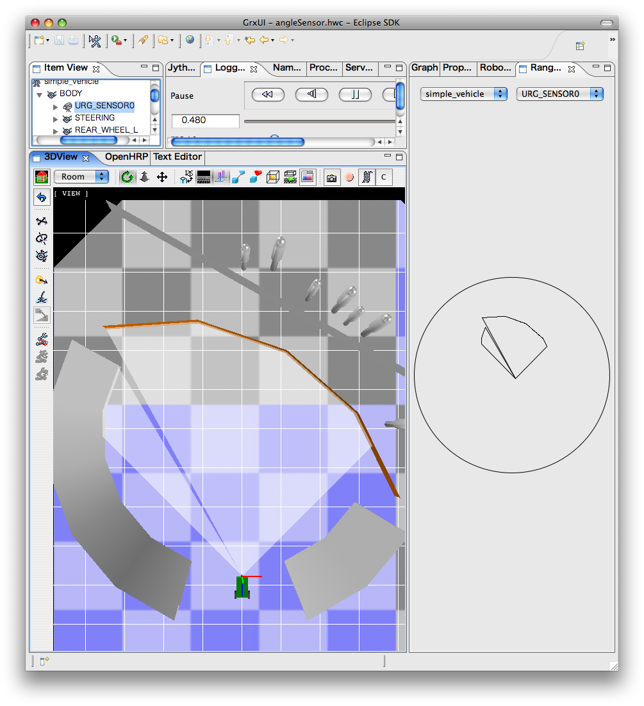

Background of implementaionIn OpenHRP-3.0, distance sensor was substituted to DEPTH type VisionSensor output, but it caused following problems.
Therefore in OpenHRP-3.1, we implemented a function to simulate distance sensor, using half-line of OPCODE that used for collision check and polygon's collision check function. Adding sensor to the modelTo define a distance sensor on a model, prototype declaration of RangeSensor node has to be added to the beginning of the VRML model of the robot which distance sensor is supposed to be attached. So that the RangeSensor node will be dangled by the children field of the joint node that correspond to the link which sensor is attached. Checking sensor output on GrxUIOn GrxUI, sensor output can be visually checked by using 3DView or RangeSensorView. Extract the model tree from ItemView and select the RangeSensor that you are supposed to see. Measurement results will be displayed as a semi-transparent polygon on the 3DView. Sectors that correspond to the measurement range is displayed prior to the simulation start. And when simulations is started those sectors transform to the shape that correspond to the measured distance. Moreover, if you select and open RangeSensorView from Eclipse menu, and select model name and the sensor name in the upper part of the view, a circle and the measurement results will be displayed. This circle refers to the distance specified in maxDistance field of RangeSensor node. Obtaining sensor output through ControllerBridgeTo obtain sensor output through ControllerBridge following options are passed to the openhrp-controller-bridge as parameters.
The output comes in the type of TimedDoubleSequence and it contains distance data scanned from the right side to the sequence part toward the direction of the measurement. The distance is output even it is further than the maxDistance, as long as an interference is occured. |